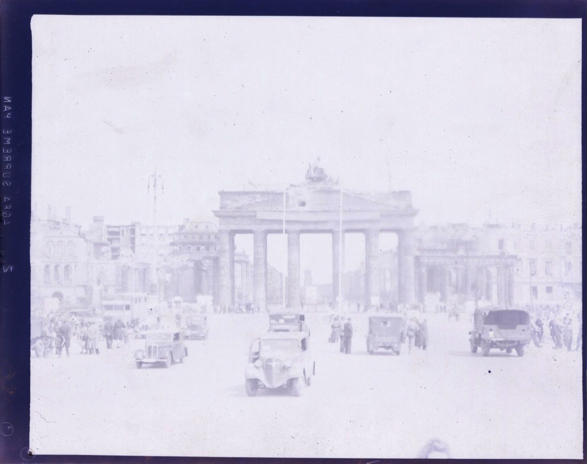
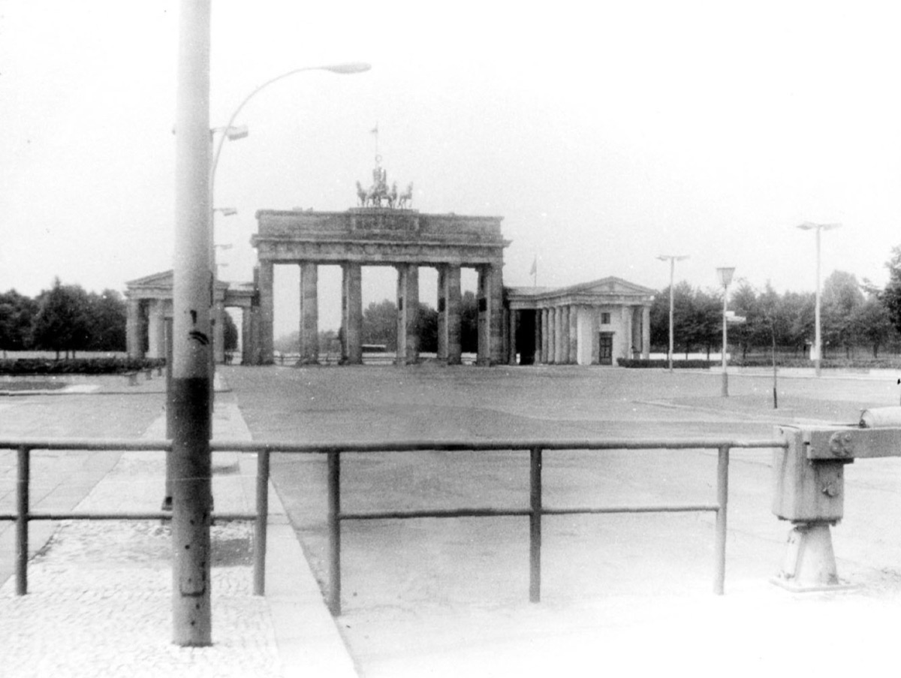

Pick an era, then drag the slider to fade between the Gate back then and the Gate today.


1945Today
Drag to fade
1945Today
1945: the only thing left standing
Stand here:
The Gate faces east into the city. Come from Unter den Linden and it is the last thing before the Tiergarten.
Planning the walk? See the free tour route.